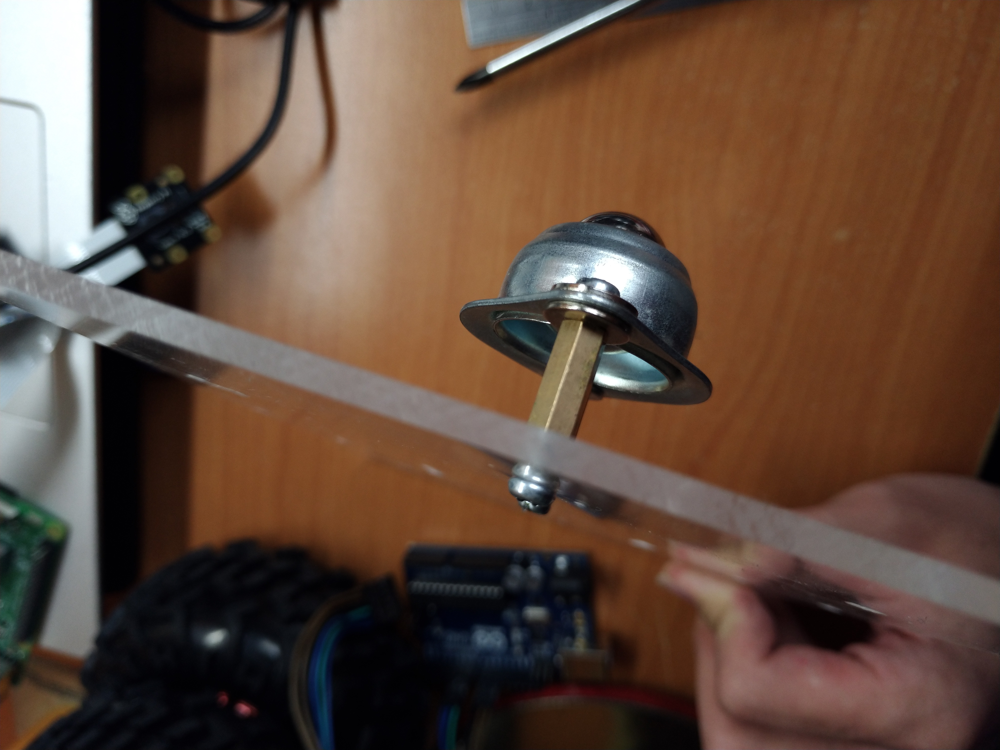
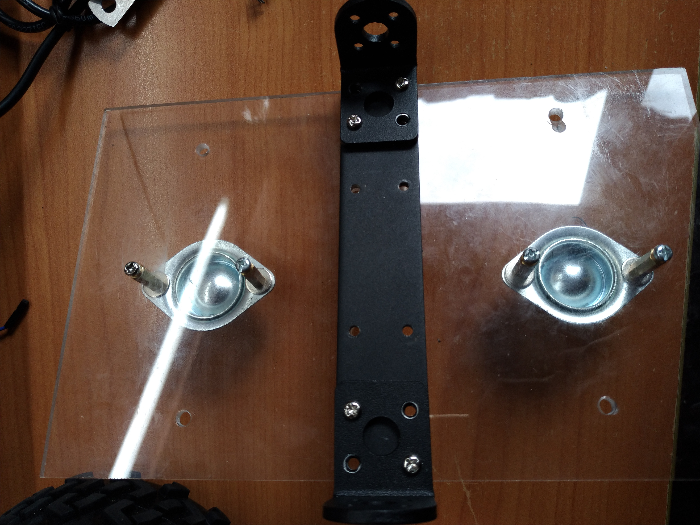

底盤製作
1. 將PC板切割為大小為13cm*21cm，並在下圖位置鑽孔
__孔徑為3mm，__孔徑為4mm
成品示意圖

2. 依照螺絲、墊片、滾珠輪、銅柱、PC板、螺絲的順序將兩組滾珠輪裝上
成品示意圖

3. 使用源達科技"4WD 智能小車底盤 越野型 直流減速電機 超大型底盤(適用JGA25-371)"套件中的鋁合金支架
將長條形和L形支架固定於PC板上
成品示意圖

4. 將L298N兩對輸出各自接上JGA25-371直流馬達，並在電源供應端先接上導線，正端接上開關，負端接上小塊麵包板作為接地
成品示意圖

成品示意圖